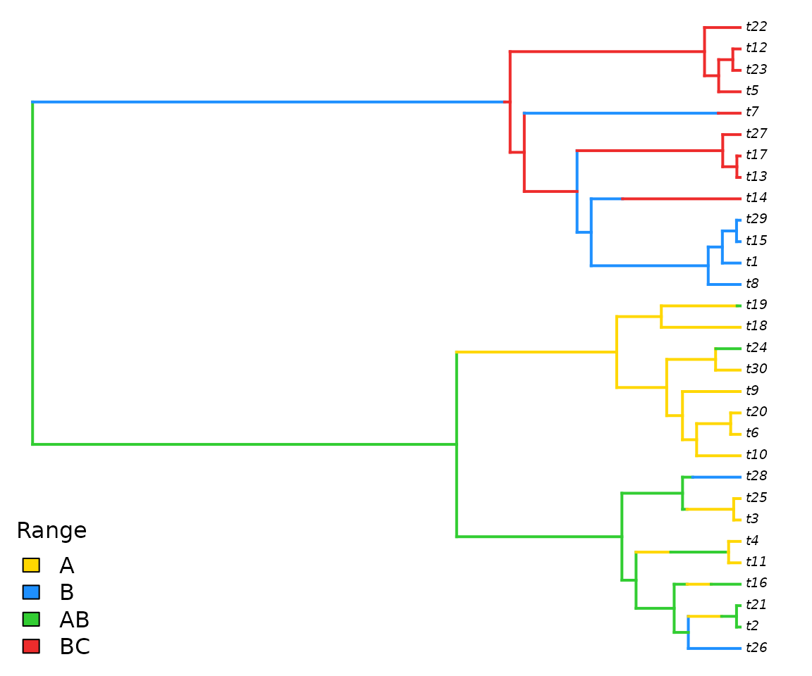
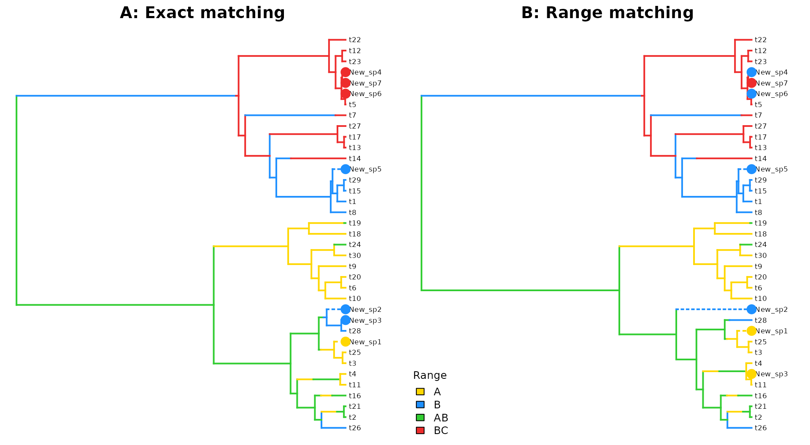

Use biogeographic ranges as constraints
Maël Doré
2026-11-27
Source:vignettes/biogeographic_data.Rmd
biogeographic_data.RmdGrafting can be constrained by species attributes
described by stochastic character maps
(simmap) of the backbone phylogeny. This tutorial explains
how to use biogeographic ranges as attributes, i.e.,
geographically-informed grafting: a missing taxon is
only grafted on the branches where its lineage could have lived in
its known range. A range is a set of
areas (e.g., "A", "AB"), and the
stochastic map shows how the range of the lineages
evolved along the backbone (e.g., from a
BioGeoBEARS analysis).
The key is the argument treat_states_as_ranges, which
tells the grafting functions how to match the allowed ranges of
a taxon with the ranges of the map:
-
Exact matching
(
treat_states_as_ranges = FALSE, the default): ranges are unrelated states, like for categorical traits (e.g., colors). A taxon allowed in"A"can only be grafted on branch pieces where the map is exactly in"A". -
Range matching
(
treat_states_as_ranges = TRUE): a taxon allowed in"A"can be grafted wherever the lineage includes the area"A":"A","AB","ABC", etc.
We compare the two options side by side, with the
same data, so that the differences shown come from the
matching type argument
(treat_states_as_ranges).
Other types of data
The principle of species attribute-based constraints is the same for all the types of data. For examples addressing different data types, please refer to:
-
categorical traits (single trait):
vignette("main_workflow"), and the examples ofvignette("graft_missing_taxa"),vignette("graft_missing_clades")andvignette("combine_missing_taxa_and_clades"); -
several traits at once (or a trait and ranges):
vignette("multiple_traits"); -
continuous traits:
vignette("continuous_data"); -
several stochastic maps to account for the
uncertainty in the evolutionary history:
vignette("handle_uncertainty").
To build stochastic maps of ranges from your own data, see
vignette("prepare_stochastic_maps").
0/ Data
We use the toy backbone, and the toy stochastic map of four
ranges built from three areas
("A", "B", "C"):
"A", "B", "AB" and
"BC".
# ------ Toy data ------ #
data(toy_backbone)
data(toy_simmap_ranges)
data(toy_missing_taxa_list_with_allowed_ranges)
# Plot the stochastic map of ranges
range_colors <- c(A = "gold", B = "dodgerblue", AB = "limegreen", BC = "firebrick2")
phytools::plotSimmap(toy_simmap_ranges, colors = range_colors, fsize = 0.6, ftype = "i", lwd = 2)
legend("bottomleft", legend = names(range_colors), fill = range_colors, title = "Range", bty = "n")
# Time spent in each range, summed on all the branches
round(colSums(toy_simmap_ranges$mapped.edge))
#> AB B A BC
#> 62 72 60 49Ranges must be coded as in BioGeoBEARS:
one capital letter per area, and the letters of a multi-area range in
alphabetical order ("AB", not "BA").
The list of missing taxa has the usual structure (see
vignette("format_inputs")), with allowed
ranges in the allowed_states item. Some taxa have
their own allowed ranges, the others have NULL and use the
global allowed_states argument of the
grafting function:
# Load missing taxa list with the allowed ranges of the 7 missing taxa
taxa_ranges <- toy_missing_taxa_list_with_allowed_ranges
# Convert to a data.frame for printing neatly the information
data.frame(Taxon_name = taxa_ranges$Taxon_name,
Target_clade_name = taxa_ranges$Target_clade_name,
Allowed_ranges = sapply(taxa_ranges$allowed_states,
function(x) if (is.null(x)) "NULL"
else paste(x, collapse = ", ")),
row.names = NULL)
#> Taxon_name Target_clade_name Allowed_ranges
#> 1 New_sp1 Family_A A
#> 2 New_sp2 Family_A NULL
#> 3 New_sp3 Family_A NULL
#> 4 New_sp4 Family_B B, BC
#> 5 New_sp5 Subfam_B1 B
#> 6 New_sp6 Gen_2 NULL
#> 7 New_sp7 Tribe_B2 A, BCHere, the global allowed_states will be
c("A", "B").
1/ Which mapped range match an allowed range?
The matching rule is the only difference between the two options. For each range of the map, we list the allowed ranges that can be grafted on it, under each matching type option:
# ------ Which allowed ranges match each range of the map? ------ #
map_ranges <- c("A", "B", "AB", "BC")
allowed <- c("A", "B", "AB", "BC")
# A range of the map matches an allowed range if it contains all of its areas
contains <- function(map_range, allowed_range)
all(strsplit(allowed_range, "")[[1]] %in% strsplit(map_range, "")[[1]])
data.frame(Map_range = map_ranges,
Exact_matching = map_ranges,
Range_matching = sapply(map_ranges, function(r)
paste(allowed[sapply(allowed, contains, map_range = r)], collapse = ", ")),
row.names = NULL)
#> Map_range Exact_matching Range_matching
#> 1 A A A
#> 2 B B B
#> 3 AB AB A, B, AB
#> 4 BC BC B, BCWith exact matching
(treat_states_as_ranges = FALSE), a branch in
"AB" is only available for taxa allowed in
"AB".
With range matching
(treat_states_as_ranges = TRUE), it is also available for
taxa allowed in "A" or "B", which is
accounting for a subset sympatric speciation event: a
lineage that lived in "AB" can produce a descendant that
lives in "A" only such as
(AB) -> (AB), (A). Conversely, a taxon allowed in
"AB" cannot be grafted on a branch in
"A".
When a taxon is grafted on a branch in a larger
range than its own range, it inherits its own allowed
range, while the branch it is grafted on continues in its
range. If several allowed ranges match, the inherited range is drawn at
random among the allowed ranges contained in the range of the
branch. Ex: a taxon allowed in "A" or
"B" is grafted on branch in "AB"; it can
inherit the range "A" or "B", but not
both.
2/ Check the grafting plan
check_grafting_plan() shows the consequences of each
option before grafting (see
vignette("check_grafting")):
# ------ Check the plan with the two options ------ #
# Exact matching, with the global allowed ranges "A" and "B"
plan_exact <- check_grafting_plan(phy = toy_backbone, missing_taxa_list = taxa_ranges,
simmap = toy_simmap_ranges, allowed_states = c("A", "B"),
treat_states_as_ranges = FALSE, verbose = FALSE)
plan_exact[, c("Taxon_name", "allowed_states", "states_available", "valid_fraction", "feasible", "cause")]
#> Taxon_name allowed_states states_available valid_fraction feasible
#> 1 New_sp1 A A, AB, B 0.07584307 TRUE
#> 2 New_sp2 A, B A, AB, B 0.51498705 TRUE
#> 3 New_sp3 A, B A, AB, B 0.67397536 TRUE
#> 4 New_sp4 B, BC B, BC 1.00000000 TRUE
#> 5 New_sp5 B B, BC 0.68175003 TRUE
#> 6 New_sp6 A, B BC 0.00000000 FALSE
#> 7 New_sp7 A, BC BC 1.00000000 TRUE
#> cause
#> 1 low_valid_fraction
#> 2 none
#> 3 none
#> 4 none
#> 5 none
#> 6 allowed_states
#> 7 none
# Range matching, with the same global allowed ranges
plan_ranges <- check_grafting_plan(phy = toy_backbone, missing_taxa_list = taxa_ranges,
simmap = toy_simmap_ranges, allowed_states = c("A", "B"),
treat_states_as_ranges = TRUE, verbose = FALSE)
plan_ranges[, c("Taxon_name", "allowed_states", "states_available", "valid_fraction", "feasible", "cause")]
#> Taxon_name allowed_states states_available valid_fraction feasible cause
#> 1 New_sp1 A, AB A, AB, B 0.9396164 TRUE none
#> 2 New_sp2 A, AB, B, BC A, AB, B 1.0000000 TRUE none
#> 3 New_sp3 A, AB, B, BC A, AB, B 1.0000000 TRUE none
#> 4 New_sp4 AB, B, BC B, BC 1.0000000 TRUE none
#> 5 New_sp5 AB, B, BC B, BC 1.0000000 TRUE none
#> 6 New_sp6 A, AB, B, BC BC 1.0000000 TRUE none
#> 7 New_sp7 A, AB, BC BC 1.0000000 TRUE noneWith exact matching, the plan flags two problems:
-
New_sp6cannot be grafted (cause = "allowed_states"): its target clade is only in"BC", which matches neither"A"nor"B"exactly. -
New_sp1, allowed in"A"only, has a low valid fraction: only 8% of the branches of its target clade are in"A", so its grafting positions are concentrated on a few short branch pieces.
With range matching, "B" matches "BC" and
"A" matches "AB": all the taxa can be grafted,
on a much larger share of the branches of their target clades.
3/ Graft with exact matching
We first graft with exact matching. The grafting stops, as
New_sp6 has no branch available:
# ------ Exact matching: infeasible plan ------ #
grafted_error <- tryCatch(
graft_missing_taxa(phy = toy_backbone, missing_taxa_list = taxa_ranges,
simmap = toy_simmap_ranges, allowed_states = c("A", "B"),
treat_states_as_ranges = FALSE, verbose = FALSE, seed = 1),
error = function(e) cat(conditionMessage(e)))
#> 1 taxa have no branch available for grafting in their allowed states: none of the available branches of their target clade has a piece in these states.
#> - New_sp6 (target clade tips: t5; allowed states: A, B)
#> Adjust 'allowed_states' (global or in missing_taxa_list), or the constraints on the branches ('include_target_clade_stem', 'Excluded_subclades', 'exclude_subclades_stem') for these taxa.With exact matching, every range that can be used
must be listed: here, we add "BC" to the global
allowed_states.
# ------ Exact matching: list all the ranges ------ #
grafted_exact <- graft_missing_taxa(phy = toy_backbone, missing_taxa_list = taxa_ranges,
simmap = toy_simmap_ranges, allowed_states = c("A", "B", "BC"),
treat_states_as_ranges = FALSE, verbose = FALSE, seed = 1)4/ Graft with range matching
With range matching, the global
allowed_states = c("A", "B") is enough:
# ------ Range matching ------ #
grafted_ranges <- graft_missing_taxa(phy = toy_backbone, missing_taxa_list = taxa_ranges,
simmap = toy_simmap_ranges, allowed_states = c("A", "B"),
treat_states_as_ranges = TRUE, verbose = FALSE, seed = 1)5/ Compare the results
We plot the updated stochastic maps, in which the grafted branches are dashed, and the grafted tips are marked with a point in the color of the range they inherited:
# ------ Compare the grafted phylogenies ------ #
# Helper: plot the updated simmap of a grafted phylogeny
plot_ranges <- function(phy_grafted, main)
{
plot_grafted(phy_grafted, which = "edges", simmap_colors = range_colors, fsize = 0.55, main = main)
grafted_tips <- which(phy_grafted$grafted_tips)
tip_ranges <- phytools::getStates(phy_grafted$simmap, type = "tips")[phy_grafted$tip.label[grafted_tips]]
ape::tiplabels(tip = grafted_tips, pch = 19, cex = 1.5, col = range_colors[tip_ranges])
}
par(mfrow = c(1, 2), mar = c(0.5, 0.5, 2, 0.5))
plot_ranges(grafted_exact, main = "A: Exact matching")
plot_ranges(grafted_ranges, main = "B: Range matching")
legend("bottomleft", legend = names(range_colors), fill = range_colors, title = "Range", bty = "n", cex = 0.8)
Since the grafting process is stochastic, placement can vary, and
final states of taxa with multiple allowed states may vary too (e.g.,
New_sp3 in "A" or "B"). The
critical change between the two matching type is the differences or not
that are allowed between the range of parental branch and the inherited
range of the grafted taxa.
We summarize below the range of the branch where each taxon
was grafted (parent_state) and the range
it inherited (tip_state) with
extract_grafting_info():
# ------ Ranges at grafting and inherited ranges ------ #
# Extract grafting information for the two matching types
info_exact <- extract_grafting_info(grafted_exact, missing_taxa_list = taxa_ranges)
info_ranges <- extract_grafting_info(grafted_ranges, missing_taxa_list = taxa_ranges)
# Summarize information in a data.frame
compare_ranges <- data.frame(Taxon_name = info_exact$Taxon_name,
Exact_parent = info_exact$parent_state, Exact_inherited = info_exact$tip_state,
Ranges_parent = info_ranges$parent_state, Ranges_inherited = info_ranges$tip_state)
# Identify subset sympatric speciation event: the taxon inherits a range smaller than the range of the branch
compare_ranges$Ranges_subset_sympatry <- compare_ranges$Ranges_parent != compare_ranges$Ranges_inherited
compare_ranges
#> Taxon_name Exact_parent Exact_inherited Ranges_parent Ranges_inherited
#> 1 New_sp1 A A A A
#> 2 New_sp2 B B AB B
#> 3 New_sp3 B B A A
#> 4 New_sp4 BC BC BC B
#> 5 New_sp5 B B B B
#> 6 New_sp6 BC BC BC B
#> 7 New_sp7 BC BC BC BC
#> Ranges_subset_sympatry
#> 1 FALSE
#> 2 TRUE
#> 3 FALSE
#> 4 TRUE
#> 5 FALSE
#> 6 TRUE
#> 7 FALSEWith exact matching, the range of the branch and the inherited range are always the same.
With range matching, taxa can be grafted on
larger ranges and inherit a smaller one (subset
sympatry), as for New_sp2, New_sp4, and
New_sp6. The diversity of available positions is also
wider.
6/ Check the grafted phylogenies
The a posteriori check of
check_grafting_constraints() must use the same
treat_states_as_ranges as the grafting (see
vignette("check_grafting")):
# ------ A posteriori check ------ #
constraints <- check_grafting_constraints(phy_grafted = grafted_ranges, phy_backbone = toy_backbone,
missing_taxa_list = taxa_ranges, allowed_states = c("A", "B"),
treat_states_as_ranges = TRUE, use_excluded_subclades = FALSE,
verbose = FALSE)
constraints[, c("Taxon_name", "in_tree", "target_ok", "states_ok", "ranges_ok")]
#> Taxon_name in_tree target_ok states_ok ranges_ok
#> New_sp1 New_sp1 TRUE TRUE TRUE TRUE
#> New_sp2 New_sp2 TRUE TRUE TRUE TRUE
#> New_sp3 New_sp3 TRUE TRUE TRUE TRUE
#> New_sp4 New_sp4 TRUE TRUE TRUE TRUE
#> New_sp5 New_sp5 TRUE TRUE TRUE TRUE
#> New_sp6 New_sp6 TRUE TRUE TRUE TRUE
#> New_sp7 New_sp7 TRUE TRUE TRUE TRUEstates_ok is TRUE when the range of the
taxon is one of its allowed ranges, and ranges_ok when it
also respects the rule of range matching: the branch it
was grafted on contains the range it inherited.
Next steps
Now that you know how to use biogeographic ranges as constraints, you may be interested in:
- combining several traits or a trait and ranges:
vignette("multiple_traits"); - exploring options to graft missing taxa,
missing clades, or both types:
vignette("graft_missing_taxa"),vignette("graft_missing_clades")andvignette("combine_missing_taxa_and_clades"); - handling uncertainty with several simulations and
stochastic maps, and ensuring the reproducibility of
the runs with the seed system:
vignette("handle_uncertainty"); - speeding up your runs by using parallel
computation:
vignette("parallel_grafting").